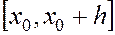
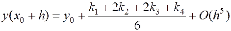
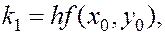
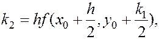
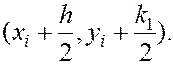
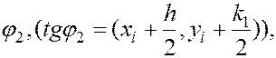
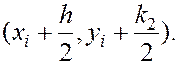
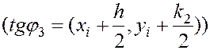

МЕТОД РУНГЕ-КУТТА
З появою і розвитком ЕОМ у чисельному інтегруванні звичайних диференціальних рівнянь бурхливого розвитку набули методи типу Рунге-Кутта . Ці методі гарантують точність до 10-го порядку включно. Їх використання обумовлене такими перевагами у порівнянні з рядом інших методів:
- методі Рунге-Кутта належать до одно крокових методів;
- вони дають можливість виконувати обчислення зі змінним кроком інтегрування;
- вони є особливо зручними для програмування на ЕОМ, оскільки обчислення, згідно з цими методами, має циклічний характер.
Але їм притаманні і деякі недоліки. Зокрема:
- дуже важко оцінити похибку отриманого наближеного розв’язку;
- праву частину рівняння (1) потрібно обчислювати в кількох точках на кожному кроці інтегрування. Чим вищий порядок методу Рунне-Кутта, тим у більшій кількості точок потрібно виконувати такі обчислення.
Для зменшення похибки методу інтегрування звичайних диференціальних рівнянь використовують розклад шуканого розв’язку в ряд Тейлора вигляду (3). При цьому бажано брати за можливістю найбільшу кількість членів ряду. Але тоді виникає необхідність апроксимації похідних від правих частин звичайних рівнянь. Суть методу Рунне-Кутта полягає в тому, що похідні апроксимуються через значення функції f(x,y) в точках, які належать інтервалу і які вибрані за умові найбільшого наближення алгоритму до ряду Тейлора. В залежності від старшого степеня h, з якого починають врахуватися члени ряду Тейлора, побудовано обчислювальні схеми Рунне-Кутта різних порядків точності.
Для побудови обчислювальних схем Рунге-Кутта четвертого порядку, в тейлоровському розкладі шуканого розв’язку враховуються члени, що містять h в четвертому степені включно. Після апроксимації похідних правої частини звичайних диференціальних рівнянь f(x,y) буде отримано сімейство схем Рунге-Кутта четвертого порядку. Оскільки процес виведення даних формул
Досить громіздким, то тут ми його не наводимо (2). Найчастіше використовують таку схему:

де



Описана схема на кожному кроці h потребує обчислення правої частини звичайних диференціальних рівнянь в чотирьох точках. Локальна похибка має п’ятий порядок, а глобальна – четвертий.
Геометричний зміст використання методу Рунне-Кутта з розрахунковими формулами (6)-(7) такий. Із точки рухаються у напрямку, який визначається кутом На цьому напрямку вибирається точка із координатами  Дали із точки рухаються у напрямку , який визначається кутом

, і на цьому напрямку вибирається точка с координатами . Нарешті із точки  рухаються у напрямку , який визначається кутом
рухаються у напрямку , який визначається кутом

і на цьому напрямку вибирається точка із координатами . Тим самим ми задали ще один напрямок, який визначається кутом . Чотири отримані напрямки усереднюються у відповідності із формулою (6). На цьому остаточному напрямку і вибирається чергова точка Для неї, описаний вище, процес повторюється.